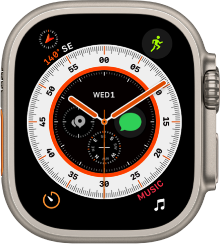

此表盘（在 Apple Watch Ultra 机型上可用）可为跑步者、徒步者和水下活动爱好者提供重要信息。
下方的文件数包括本地化资源。固件名称键能确认包的归属；组件的圆屏点击边界、亮屏过渡与 AOD 对照均待设备验证。
原始包 已解析属性表 Mach-O 方法与成员 ARM64 汇编 解出的图集
.strings × 132 .plist × 3 .car × 1 无扩展名 × 1
原始包 已解析属性表 Mach-O 方法与成员 ARM64 汇编 解出的图集
.strings × 132 .plist × 3 .car × 1 无扩展名 × 1
原始包 已解析属性表 Mach-O 方法与成员 ARM64 汇编 解出的图集
.strings × 132 .plist × 3 .car × 1 无扩展名 × 1
NTKGalleonFaceBundle.bundleFACE_STYLE_GALLEON_DESCRIPTIONdesertsandoliveburgundytranslucentBlacktranslucentGraytranslucentKelpdarkUmbergalleon.adventurer-fsgalleon.adventurergalleon.performance-fsgalleon.ocean-fsgalleon.oceangalleon.adventurer-blackgalleon.ocean-blackgalleon.performance-blackgalleon.performanceEDIT_OPTION_LABEL_GALLEON_BEZEL_STYLE_EMPTYEDIT_MODE_LABEL_GALLEON_DENSITYEDIT_OPTION_LABEL_GALLEON_TIME_MODE_MINUTEEDIT_OPTION_LABEL_GALLEON_BEZEL_STYLE_LAT_LONGEDIT_OPTION_LABEL_GALLEON_TIME_MODE_HOUREDIT_OPTION_LABEL_GALLEON_BEZEL_STYLE_ELEVATIONEDIT_MODE_LABEL_GALLEON_CONTENT色组与设备条件 NTKGalleon-F2026.color.plist NTKGalleon.color.plist 共享色组与默认值
-[NTKGalleonColorPalette lowPowerMode];-[NTKGalleonColorPalette setLowPowerMode:];-[NTKGalleonColorPalette isLowPowerMode];-[NTKGalleonCompassLayeredRingView transitionToTritiumWithProgress:];+[NTKGalleonFace tritium_burnInFaceName];-[NTKGalleonFaceColorPalette lowPowerMode];-[NTKGalleonFaceColorPalette setLowPowerMode:];-[NTKGalleonFaceColorPalette isLowPowerMode];-[NTKGalleonFaceView _tritium_filterProviderForSlot:];-[NTKGalleonFaceView tritium_didTransitionToTritiumOn];-[NTKGalleonFaceView _setTritiumProgress:];-[NTKGalleonFaceView setLowPowerMode:];-[NTKGalleonFaceView _applyTransitionFraction:fromLowPowerModeActive:toLowPowerModeActive:];-[NTKGalleonFaceView tritium_didTransitionToTritiumOff];-[NTKGalleonFaceView tritium_usesWidgetTransitionPresetColors];-[NTKGalleonFaceView _cancelLowPowerAnimation];-[NTKGalleonFaceView tritium_transitionToTritiumOnWithProgress:];-[NTKGalleonFaceView tritium_createFaceAnimator];-[NTKGalleonFaceView tritium_alwaysOnTimelines];-[NTKGalleonFaceView updateLowPowerMode:];-[NTKGalleonFaceView _lowPowerModeEnabled];-[NTKGalleonFaceView _createLowPowerTemplate];-[NTKGalleonFaceView _updateColorForTritiumWithProgress:];-[NTKGalleonFaceView _updateTritiumHandStyles];-[NTKGalleonFaceView tritium_responseForTapToWakeAtPoint:];-[NTKGalleonFaceView _lowPowerTemplate];-[NTKGalleonFaceView tritium_transitionToTritiumOffWithProgress:];-[NTKGalleonFaceView _tritium_updateComplicationColors];-[NTKGalleonFaceView _applyLowPowerModeFraction:];-[NTKGalleonFaceView tritium_willTransitionToTritiumOnToFrameSpecifier:];-[NTKGalleonFaceView _adjustLowPowerMode];-[NTKGalleonFaceView tritium_willTransitionToTritiumOffFromFrameSpecifier:];-[NTKGalleonGPSRingView applyTritiumFraction:];-[NTKGalleonMotionState _lowPowerModeStateChanged];-[NTKGalleonMotionState setTritium:];-[NTKGalleonMotionState tritium];-[NTKGalleonColorPalette innerMinorTickColor];-[NTKGalleonColorPalette outerCompassMedialTickColor];-[NTKGalleonColorPalette secondaryCornerComplicationColor];-[NTKGalleonColorPalette outerCompassMinorTickColor];-[NTKGalleonColorPalette secondaryComplicationColor];-[NTKGalleonColorPalette outerTimeMinorTickColor];-[NTKGalleonColorPalette outerTimeMajorTickColor];-[NTKGalleonColorPalette outerTimeMedialTickColor];-[NTKGalleonColorPalette innerMajorTickColor];-[NTKGalleonColorPalette outerCompassMajorTickColor];-[NTKGalleonColorPalette secondHandColor];-[NTKGalleonColorPalette secondHand];-[NTKGalleonColorPalette secondaryComplication];-[NTKGalleonColorPalette secondaryComplication_night];-[NTKGalleonColorPalette innerMajorTick];-[NTKGalleonColorPalette innerMajorTick_night];-[NTKGalleonColorPalette innerMinorTick];-[NTKGalleonColorPalette innerMinorTick_night];-[NTKGalleonColorPalette outerCompassMajorTick];-[NTKGalleonColorPalette outerCompassMajorTick_night];-[NTKGalleonColorPalette outerCompassMedialTick];-[NTKGalleonColorPalette outerCompassMedialTick_night];-[NTKGalleonColorPalette outerCompassMinorTick];-[NTKGalleonColorPalette outerCompassMinorTick_night];-[NTKGalleonColorPalette outerTimeMajorTick];-[NTKGalleonColorPalette outerTimeMajorTick_night];-[NTKGalleonColorPalette outerTimeMedialTick];-[NTKGalleonColorPalette outerTimeMedialTick_night];-[NTKGalleonColorPalette outerTimeMinorTick];-[NTKGalleonColorPalette outerTimeMinorTick_night];-[NTKGalleonColorPalette secondHand_night];-[NTKGalleonColorPalette secondaryComplication_corner];-[NTKGalleonCompassLayeredRingView _outgoingAlphaForFraction:withAnimationStyle:];-[NTKGalleonCompassLayeredRingView applyRingModeTransitionFraction:fromMode:toMode:withAnimationStyle:];-[NTKGalleonCompassLayeredRingView _incomingAlphaForFraction:withAnimationStyle:];-[NTKGalleonCompassLayeredRingView transitionToTritiumWithProgress:];-[NTKGalleonCompassLayeredRingView _minuteDialVisible];-[NTKGalleonCompassLayeredRingView _applyPaletteToMinuteDial:];-[NTKGalleonFaceColorPalette innerMinorTickColor];-[NTKGalleonFaceColorPalette outerCompassMedialTickColor];-[NTKGalleonFaceColorPalette secondaryCornerComplicationColor];-[NTKGalleonFaceColorPalette outerCompassMinorTickColor];-[NTKGalleonFaceColorPalette secondaryComplicationColor];-[NTKGalleonFaceColorPalette outerTimeMinorTickColor];-[NTKGalleonFaceColorPalette outerTimeMajorTickColor];-[NTKGalleonFaceColorPalette outerTimeMedialTickColor];-[NTKGalleonFaceColorPalette innerMajorTickColor];-[NTKGalleonFaceColorPalette outerCompassMajorTickColor];-[NTKGalleonFaceColorPalette secondHandColor];-[NTKGalleonFaceView tritium_didTransitionToTritiumOn];-[NTKGalleonFaceView _applyTransitionFraction:fromLowPowerModeActive:toLowPowerModeActive:];-[NTKGalleonFaceView _applyTransitionFromCompassRingMode:fromBezelStyle:fromNightMode:toCompassRingMode:toBezelStyle:toNightMode:animationStyle:fraction:];-[NTKGalleonFaceView tritium_didTransitionToTritiumOff];-[NTKGalleonFaceView tritium_usesWidgetTransitionPresetColors];-[NTKGalleonFaceView _applyTransitionFraction:fromOption:toOption:forCustomEditMode:slot:];-[NTKGalleonFaceView _applyTransitionFromTimeMode:fromCompassMode:fromBezelStyle:fromNightMode:toTimeMode:toCompassMode:toBezelStyle:toNightMode:animationStyle:fraction:];-[NTKGalleonFaceView _cancelLowPowerAnimation];-[NTKGalleonFaceView tritium_transitionToTritiumOnWithProgress:];-[NTKGalleonFaceView _setComplicationTransitionFraction:];-[NTKGalleonFaceView tritium_createFaceAnimator];-[NTKGalleonFaceView tritium_alwaysOnTimelines];-[NTKGalleonFaceView _applyTransitionFraction:fromBezelStyle:toBezelStyle:];-[NTKGalleonFaceView _applyTransitionFraction:fromNightMode:toNightMode:];-[NTKGalleonFaceView _setCompassMode:animated:];-[NTKGalleonFaceView tritium_transitionToTritiumOffWithProgress:];-[NTKGalleonFaceView _applyTransitionFraction:fromColor:toColor:];-[NTKGalleonFaceView _applyTimeFocusWithTransitionFraction:];-[NTKGalleonFaceView _configureForTransitionFraction:fromEditMode:toEditMode:];-[NTKGalleonFaceView _applyTransitionFraction:fromTimeMode:toTimeMode:];-[NTKGalleonFaceView _nightModeInterpolator];-[NTKGalleonFaceView tritium_willTransitionToTritiumOnToFrameSpecifier:];-[NTKGalleonFaceView tritium_willTransitionToTritiumOffFromFrameSpecifier:];-[NTKGalleonGPSRingView applyTransitionFraction:fromBezelStyle:toBezelStyle:];-[NTKGalleonHandsView secondHandConfiguration];-[NTKGalleonHandsView applyTransitionFractionToCompassMode:fraction:];-[NTKGalleonHandsView minuteHandConfiguration];-[NTKGalleonHandsView applyHourMinuteHandsTransitionFraction:fromStrokeColor:fromFillColor:toStrokeColor:toFillColor:];+[NTKGalleonMinuteDialView _newLabelViewWithDevice:];-[NTKGalleonMinuteDialView galleon_setProgress:];-[NTKGalleonMinuteDialView initWithDevice:];-[NTKGalleonMinuteDialView galleon_setPalette:];+[NTKGalleonTickView galleon_newTickViewWithDevice:numberOfTicks:tickSizes:];+[NTKGalleonTickView layerClass];-[NTKGalleonTickView setTintColor:];-[NTKGalleonTickView _setTickColor:];-[NTKGalleonTickView diameter];-[NTKGalleonTickView galleon_setProgress:];-[NTKGalleonTickView sizeRange];-[NTKGalleonTickView initWithDevice:dialDiameter:numberOfTicks:tickSizes:];-[NTKGalleonTickView numberOfTicks];+[NTKGalleonTimeRingView _imageWithDevice:renderer:diameter:tickCount:tickSize:];-[NTKGalleonColorPalette compassMode];-[NTKGalleonColorPalette setNightMode:];-[NTKGalleonColorPalette lowPowerMode];-[NTKGalleonColorPalette setCompassMode:];-[NTKGalleonColorPalette background];-[NTKGalleonColorPalette signalStrength];-[NTKGalleonColorPalette outerRingBackgroundColor];-[NTKGalleonColorPalette compassHourHandStrokeColor];-[NTKGalleonColorPalette setLowPowerMode:];-[NTKGalleonColorPalette nightMode];-[NTKGalleonColorPalette innerMinorTickColor];-[NTKGalleonColorPalette outerCompassMedialTickColor];-[NTKGalleonColorPalette outerTimeLabelColor];-[NTKGalleonColorPalette innerRingBackgroundColor];-[NTKGalleonColorPalette timeHourHandInlayColor];-[NTKGalleonColorPalette secondaryCornerComplicationColor];-[NTKGalleonColorPalette outerCompassMinorTickColor];-[NTKGalleonColorPalette simpleTextComplicationColor];-[NTKGalleonColorPalette isBlack];-[NTKGalleonColorPalette headingLabelColor];-[NTKGalleonColorPalette secondaryComplicationColor];-[NTKGalleonColorPalette compassChevronColor];-[NTKGalleonColorPalette backgroundColor];-[NTKGalleonColorPalette compassHourHandInlayColor];-[NTKGalleonColorPalette gpsRingDotColor];-[NTKGalleonColorPalette gpsRingBackgroundColor];-[NTKGalleonColorPalette signalStrengthColor];-[NTKGalleonColorPalette gpsRingTextColor];-[NTKGalleonColorPalette isFullColor];-[NTKGalleonColorPalette isNightMode];-[NTKGalleonColorPalette timeHourHandStrokeColor];-[NTKGalleonColorPalette primaryComplicationColor];-[NTKGalleonColorPalette outerTimeMinorTickColor];-[NTKGalleonColorPalette outerTimeMajorTickColor];-[NTKGalleonColorPalette isLowPowerMode];-[NTKGalleonColorPalette outerTimeMedialTickColor];-[NTKGalleonColorPalette compassMarkerColor];-[NTKGalleonColorPalette hasDropShadow];-[NTKGalleonColorPalette primaryCornerComplicationColor];-[NTKGalleonColorPalette outerDegreeLabelColor];-[NTKGalleonColorPalette innerMajorTickColor];-[NTKGalleonColorPalette outerCompassMajorTickColor];-[NTKGalleonColorPalette hourHandInlayColor];-[NTKGalleonColorPalette secondHandColor];-[NTKGalleonColorPalette isFullScreen];-[NTKGalleonColorPalette hourHandStrokeColor];-[NTKGalleonColorPalette headingLabel];-[NTKGalleonColorPalette secondHand];-[NTKGalleonColorPalette simpleTextComplication];-[NTKGalleonColorPalette softBlack];-[NTKGalleonColorPalette statusBar_night];-[NTKGalleonColorPalette primaryComplication];-[NTKGalleonColorPalette primaryComplication_night];-[NTKGalleonColorPalette secondaryComplication];-[NTKGalleonColorPalette secondaryComplication_night];-[NTKGalleonColorPalette simpleTextComplication_night];-[NTKGalleonColorPalette circularComplicationB];-[NTKGalleonColorPalette hourHandStroke];-[NTKGalleonColorPalette background_night];-[NTKGalleonColorPalette circularComplicationA];-[NTKGalleonColorPalette compassChevron];-[NTKGalleonColorPalette compassChevron_night];-[NTKGalleonColorPalette compassMarker];-[NTKGalleonColorPalette compassMarker_night];-[NTKGalleonColorPalette duoDialRingBackground];-[NTKGalleonColorPalette duoDialRingBackground2];-[NTKGalleonColorPalette gpsRingBackground_night];-[NTKGalleonColorPalette gpsRingDot];-[NTKGalleonColorPalette gpsRingDot_night];-[NTKGalleonColorPalette gpsRingText];-[NTKGalleonColorPalette gpsRingText_night];-[NTKGalleonColorPalette headingLabel_night];-[NTKGalleonColorPalette hourHandInlay_compass];-[NTKGalleonColorPalette hourHandInlay_night];-[NTKGalleonColorPalette hourHandStroke_night];-[NTKGalleonColorPalette innerMajorTick];-[NTKGalleonColorPalette innerMajorTick_night];-[NTKGalleonColorPalette innerMinorTick];-[NTKGalleonColorPalette innerMinorTick_night];-[NTKGalleonColorPalette innerRingBackground];-[NTKGalleonColorPalette innerRingBackground_night];-[NTKGalleonColorPalette outerCompassMajorTick];-[NTKGalleonColorPalette outerCompassMajorTick_night];-[NTKGalleonColorPalette outerCompassMedialTick];-[NTKGalleonColorPalette outerCompassMedialTick_night];-[NTKGalleonColorPalette outerCompassMinorTick];-[NTKGalleonColorPalette outerCompassMinorTick_night];-[NTKGalleonColorPalette outerDegreeLabel];-[NTKGalleonColorPalette outerDegreeLabel_night];-[NTKGalleonColorPalette outerRingBackground];-[NTKGalleonColorPalette outerRingBackground_night];-[NTKGalleonColorPalette outerShadow];-[NTKGalleonColorPalette outerTimeLabel];-[NTKGalleonColorPalette outerTimeLabel_night];-[NTKGalleonColorPalette outerTimeMajorTick];-[NTKGalleonColorPalette outerTimeMajorTick_night];-[NTKGalleonColorPalette outerTimeMedialTick];-[NTKGalleonColorPalette outerTimeMedialTick_night];-[NTKGalleonColorPalette outerTimeMinorTick];-[NTKGalleonColorPalette outerTimeMinorTick_night];-[NTKGalleonColorPalette primaryComplication_corner];-[NTKGalleonColorPalette secondHand_night];-[NTKGalleonColorPalette secondaryComplication_corner];-[NTKGalleonColorPalette signalStrength_night];-[NTKGalleonNightModeSupporting galleon_setPalette:];-[NTKGalleonCompassLayeredRingView setPalette:];-[NTKGalleonCompassLayeredRingView _applyPalette:toDial:];-[NTKGalleonCompassLayeredRingView _applyPaletteToHourDial:];-[NTKGalleonCompassLayeredRingView _applyPaletteToDegreeDial:];-[NTKGalleonCompassLayeredRingView palette];-[NTKGalleonCompassLayeredRingView _applyPaletteToMinuteDial:];-[NTKGalleonCompassLayeredRingView _updateDropShadowForPalette:];-[NTKGalleonDegreeDialView galleon_setPalette:];+[NTKGalleonFace _initialDefaultComplicationForSlot:forDevice:];+[NTKGalleonFace _richComplicationSlotsForDevice:];+[NTKGalleonFace _orderedComplicationSlots];+[NTKGalleonFace _defaultSelectedComplicationSlotForDevice:];+[NTKGalleonFace _complicationFontStyleForSlot:];-[NTKGalleonFace _complicationSlotDescriptors];-[NTKGalleonFace complicationsColorRenderingUsage];-[NTKGalleonFace _localizedNameForComplicationSlot:];-[NTKGalleonFace _numberOfOptionsForCustomEditMode:slot:];-[NTKGalleonFace _defaultOptionForCustomEditMode:slot:];-[NTKGalleonFace _indexOfOption:forCustomEditMode:slot:];-[NTKGalleonFace _optionAtIndex:forCustomEditMode:slot:];-[NTKGalleonFaceColorPalette compassMode];-[NTKGalleonFaceColorPalette setNightMode:];-[NTKGalleonFaceColorPalette lowPowerMode];-[NTKGalleonFaceColorPalette setCompassMode:];-[NTKGalleonFaceColorPalette configurationDidChange:];-[NTKGalleonFaceColorPalette swatchImageForSize:];-[NTKGalleonFaceColorPalette _tritiatedPrimary];-[NTKGalleonFaceColorPalette outerRingBackgroundColor];-[NTKGalleonFaceColorPalette compassHourHandStrokeColor];-[NTKGalleonFaceColorPalette setLowPowerMode:];-[NTKGalleonFaceColorPalette _brightnessCappedPrimary];-[NTKGalleonFaceColorPalette nightMode];-[NTKGalleonFaceColorPalette innerMinorTickColor];-[NTKGalleonFaceColorPalette outerCompassMedialTickColor];-[NTKGalleonFaceColorPalette outerTimeLabelColor];-[NTKGalleonFaceColorPalette _isFullColor];-[NTKGalleonFaceColorPalette _isFullScreen];-[NTKGalleonFaceColorPalette identifier];-[NTKGalleonFaceColorPalette innerRingBackgroundColor];-[NTKGalleonFaceColorPalette timeHourHandInlayColor];-[NTKGalleonFaceColorPalette secondaryCornerComplicationColor];-[NTKGalleonFaceColorPalette _colorWithPrimaryFallback:];-[NTKGalleonFaceColorPalette outerCompassMinorTickColor];-[NTKGalleonFaceColorPalette simpleTextComplicationColor];-[NTKGalleonFaceColorPalette editingPaletteForEditMode:];-[NTKGalleonFaceColorPalette isBlack];-[NTKGalleonFaceColorPalette headingLabelColor];-[NTKGalleonFaceColorPalette secondaryComplicationColor];-[NTKGalleonFaceColorPalette compassChevronColor];-[NTKGalleonFaceColorPalette backgroundColor];-[NTKGalleonFaceColorPalette compassHourHandInlayColor];-[NTKGalleonFaceColorPalette gpsRingDotColor];-[NTKGalleonFaceColorPalette gpsRingBackgroundColor];-[NTKGalleonFaceColorPalette signalStrengthColor];-[NTKGalleonFaceColorPalette setEditMode:];-[NTKGalleonFaceColorPalette _isBlack];-[NTKGalleonFaceColorPalette gpsRingTextColor];-[NTKGalleonFaceColorPalette isFullColor];-[NTKGalleonFaceColorPalette isNightMode];-[NTKGalleonFaceColorPalette timeHourHandStrokeColor];-[NTKGalleonFaceColorPalette editMode];-[NTKGalleonFaceColorPalette primaryComplicationColor];-[NTKGalleonFaceColorPalette outerTimeMinorTickColor];-[NTKGalleonFaceColorPalette _colorWithBrightnessCappedPrimaryFallback:];-[NTKGalleonFaceColorPalette outerTimeMajorTickColor];-[NTKGalleonFaceColorPalette isLowPowerMode];-[NTKGalleonFaceColorPalette outerTimeMedialTickColor];-[NTKGalleonFaceColorPalette compassMarkerColor];-[NTKGalleonFaceColorPalette hasDropShadow];-[NTKGalleonFaceColorPalette primaryCornerComplicationColor];-[NTKGalleonFaceColorPalette outerDegreeLabelColor];-[NTKGalleonFaceColorPalette innerMajorTickColor];-[NTKGalleonFaceColorPalette outerCompassMajorTickColor];-[NTKGalleonFaceColorPalette hourHandInlayColor];-[NTKGalleonFaceColorPalette secondHandColor];-[NTKGalleonFaceColorPalette isFullScreen];-[NTKGalleonFaceColorPalette copyWithZone:];-[NTKGalleonFaceColorPalette _tritiatedBrightnessCappedPrimary];-[NTKGalleonFaceColorPalette hourHandStrokeColor];+[NTKGalleonFaceView _galleonSimpleComplicationFontDescriptor];-[NTKGalleonFaceView overrideColorForStatusBar];-[NTKGalleonFaceView _tritium_filterProviderForSlot:];-[NTKGalleonFaceView applyColorOnAnalogHands];-[NTKGalleonFaceView _complicationAlphaForEditMode:];-[NTKGalleonFaceView _homeScreenDateLabelColor];-[NTKGalleonFaceView _homeScreenBackgroundColor];-[NTKGalleonFaceView createFaceColorPalette];-[NTKGalleonFaceView _complicationContainerViewForSlot:];-[NTKGalleonFaceView tritium_usesWidgetTransitionPresetColors];-[NTKGalleonFaceView _applyTransitionFraction:fromOption:toOption:forCustomEditMode:slot:];-[NTKGalleonFaceView layoutSubviews];-[NTKGalleonFaceView _applyBreathingFraction:forCustomEditMode:slot:];-[NTKGalleonFaceView _setComplicationTransitionFraction:];-[NTKGalleonFaceView _updateViewColorsWithPalette:];-[NTKGalleonFaceView _applyComplicationColor:slot:];-[NTKGalleonFaceView _filterProviderForSlot:];-[NTKGalleonFaceView _applyPaletteToComplications:];-[NTKGalleonFaceView _applyOption:forCustomEditMode:slot:];-[NTKGalleonFaceView _cleanupAfterEditing];-[NTKGalleonFaceView _updateColorForTritiumWithProgress:];-[NTKGalleonFaceView galleryFaceColorPalette];-[NTKGalleonFaceView _statusBarColorForNightModeFraction:];-[NTKGalleonFaceView _updateViewColorsWithMultiPalette];-[NTKGalleonFaceView _fadesComplicationSlot:inEditMode:];-[NTKGalleonFaceView _applyComplicationColor:withPalette:slot:];-[NTKGalleonFaceView configureComplicationViewDisplayWrapper:forSlot:];-[NTKGalleonFaceView _configureComplicationView:forSlot:];-[NTKGalleonFaceView colorPalette];-[NTKGalleonFaceView _loadLayoutRules];-[NTKGalleonFaceView _applyTransitionFraction:fromColor:toColor:];-[NTKGalleonFaceView _applyViewOrderingForComplicationEditingWithTimeViewOnTop:];-[NTKGalleonFaceView _applyComplicationFont:];-[NTKGalleonFaceView _tritium_updateComplicationColors];-[NTKGalleonFaceView _applyMultiPaletteFractions];-[NTKGalleonFaceView _keylineFrameForComplicationSlot:selected:];-[NTKGalleonFaceView _applyRubberBandingFraction:forCustomEditMode:slot:];-[NTKGalleonFaceView _multiPalette];-[NTKGalleonGPSRingView _updateLatLongColors];-[NTKGalleonGPSRingView setPalette:];-[NTKGalleonGPSRingView layoutSubviews];-[NTKGalleonGPSRingView palette];-[NTKGalleonGPSRingView _layoutCurvedLabel:top:];-[NTKGalleonGPSRingView _updateElevationColors];-[NTKGalleonHandsView setPalette:];-[NTKGalleonHandsView _applyPalette];-[NTKGalleonHandsView palette];-[NTKGalleonHandsView applyHourMinuteHandsTransitionFraction:fromStrokeColor:fromFillColor:toStrokeColor:toFillColor:];-[NTKGalleonHourDialView galleon_setPalette:];-[NTKGalleonMinuteDialView galleon_setPalette:];-[NTKGalleonPrerenderedHeadingView layoutSubviews];-[NTKGalleonPrerenderedHeadingView setTextColor:];-[NTKGalleonRadialLabelView layoutSubviews];-[NTKGalleonRadialLabelView tintColorDidChange];-[NTKGalleonRasterizableProgressView tintColorDidChange];-[NTKGalleonSignalStrengthView setPalette:];-[NTKGalleonSignalStrengthView palette];-[NTKGalleonTickView setTintColor:];-[NTKGalleonTickView _setTickColor:];-[NTKGalleonTimeRingView setPalette:];-[NTKGalleonTimeRingView palette];